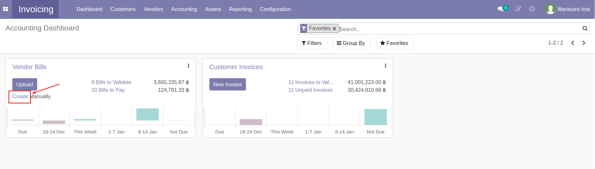
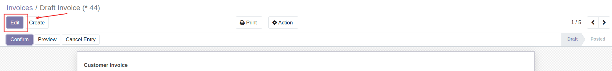
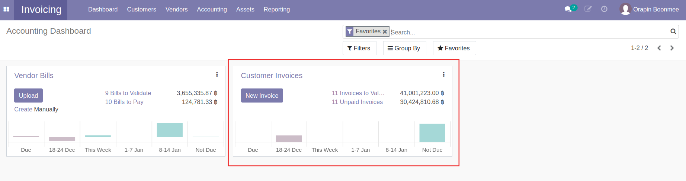
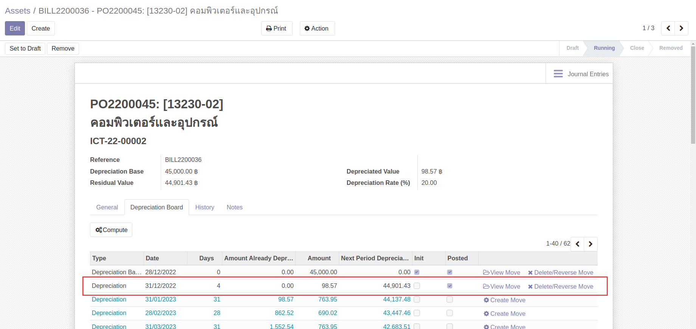
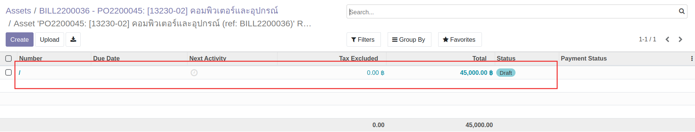

กระบวนการบัญชีการเงิน
การสร้างเอกสารจ่ายเงินมัดจำจาก PO
หลังจาก PO ได้รับอนุมัติและต้องมีการจ่ายเงินมัดจำ สามารถดำเนินการได้ดังนี้
Menu: Purchase > Orders > Purchase Orders
-
ที่ช่องค้นหา กรอกเลขใบ PO และเลือกการค้นหาจาก Order

-
กดที่รายการเพื่อเปิดเอกสาร

-
กดปุ่ม Register Deposit

-
ระบบจะแสดงหน้าต่างและให้เลือกดำเนินการดังนี้
- เลือกการสร้างบิลจ่ายเงินมัดจำ
- Down Payment (percentage): สร้างบิลเงินมัดจำ โดยคำนวณจาก % ของยอดก่อนภาษี
- Deposit Payment (fixed amount): สร้างบิลเงินมัดจำ โดยกรอกจำนวนที่ต้องการ
- เลือกการดำเนินการ
- Create and View bills: สร้างบิลฉบับร่างและเรียกดู
- Create deposit: สร้างบรรทัดรายการเงินมัดจำในใบ PO แต่ไม่ต้องการสร้างบิล
- Cancel: ยกเลิกการสร้างเอกสาร
- เลือกการสร้างบิลจ่ายเงินมัดจำ
การตั้งเจ้าหนี้ (Vendor Bills)
การตั้งเจ้าหนี้ (Vendor Bills) สกุลเงินบาทไทย
เมื่อต้องการตั้งเจ้าหนี้ สามารถดำเนินการได้ดังนี้
Menu: Invoicing > Dashboard > Vendor Bills
-
ที่กล่อง Vendor Bills

- Create: ใช้สำหรับสร้างเอกสารใหม่
- Bills to Validate: แสดงจำนวนรายการที่รอการบันทึกบัญชี (เอกสารอยู่ในสถานะ Draft)
- Bills to Pay: แสดงจำนวนรายการที่รอบันทึกจ่ายชำระเงิน (เอกสารอยู่ในสถานะ Posted / สถานะการจ่ายเงินเป็น สถานะการจ่ายเงินเป็น Partial Paid หรือ Not Paid)
-
กดปุ่ม Create เพื่อสร้างเอกสาร Vendor Bill สถานะ Draft 
-
กรอกข้อมูลที่ Header และตรวจสอบข้อมูลการตั้งเจ้าหนี้

- Vendor: เลือกคู่ค้าที่ต้องการตั้งหนี้
- Bill Reference: กรอกเลขที่เอกสารใบแจ้งหนี้จากคู่ค้าเพื่ออ้างอิง (ถ้ามี)
- Auto-Complete: สามารถเลือกเลขที่ PO ที่เกี่ยวข้อง ระบจะช่วยดึงข้อมูลสินค้าที่จัดซื้อตามใบ PO นั้นๆมากรอกให้ในแท็บ Invoice Lines
- Bill Date: วันที่ตามใบแจ้งหนี้
- Accounting Date: วันที่บันทึกบัญชี ระบบเลือกให้เป็นวันที่ปัจจุบัน
- Due Date: กำหนดการชำระเงิน สามารถเลือกเป็นระยะเวลาหรือระบุวันที่ได้ (หากมีการตั้งค่า Payment term ไว้ที่ข้อมูลหลัก Contacts ระบบจะช่วยดึงค่ามากรอกให้อัตโนมัติ)
- ที่แท็บ Invoice Line
- กรณีดึงข้อมูลจากใบ PO ตรวจสอบข้อมูลและภาษี หากมีภาษีหัก ณ ที่จ่าย ให้เลือกประเภทหัก ณ ที่จ่ายในคอลัมน์ WHT
- กรณีไม่ดึงข้อมูลจาก PO สามารถกรอกข้อมูลในแต่ละคอลัมน์ได้เลย
Note
หากเอกสาร Vendor Bills ดึงข้อมูลใบ PO ที่มีการจัดซื้อสินทรัพย์ (Asset) ที่แท็บ Invoice Line > คอลัมน์ Asset Profile จะแสดงข้อมูล Asset Profile ให้ตรวจสอบความถูกต้อง หากต้องการแก้ไขสามารถกดที่ช่องเพื่อเลือก Asset Profile ใหม่ได้
 และเมื่อทำการตั้งเจ้าหนี้ ระบบจะสร้างข้อมูลสินทรัพย์ สถานะ Draft ให้อัตโนมัติ
และเมื่อทำการตั้งเจ้าหนี้ ระบบจะสร้างข้อมูลสินทรัพย์ สถานะ Draft ให้อัตโนมัติ
-
กดปุ่ม Save เพื่อบันทึกข้อมูลและตรวจทานอีกครั้ง หากต้องการแก้ไขให้กดปุ่ม Edit

Note
กรณีมีภาษีมูลค่าเพิ่ม จะต้องกรอกข้อมูลใบกำกับภาษี โดย
- กดปุ่ม Edit

- ไปที่แท็บ Tax Invoice เพื่อกรอกข้อมูลใบกำกับภาษี

- กดปุ่ม Edit
-
กดปุ่ม Confirm เพื่อยืนยันการบันทึกค่าใช้จ่ายและตั้งเจ้าหนี้ สถานะเอกสารจะเปลี่ยนจาก Draft เป็น Posted และรอการบันทึกจ่ายชำระเงินต่อไป

การตั้งเจ้าหนี้ (Vendor Bills) สกุลเงินต่างประเทศ
Warning
ก่อนการตั้งเจ้าหนี้ ต้องแจ้งให้หัวหน้าบัญชีการเงินอัปเดตค่าเงินของวันที่ต้องการตั้งหนี้ก่อนเสมอ (คู่มือ Master Data > Currencies > การอัปเดตค่าเงิน)
การทำงานจะเหมือนขั้นตอนการบันทึกค่าใช้จ่ายและตั้งเจ้าหนี้ปกติและเมื่อกดปุ่ม Confirm แล้ว ที่แท็บ Journal Items จะลงบันทึกบัญชีโดยคำนวณตามเรทเงินของวันนั้นๆ

การบันทึกจ่ายชำระเงิน (Vendor Payment)
การบันทึกจ่ายชำระเงินสกุลเงินบาทไทย (Vendor Payment)
เมื่อต้องการบันทึกจ่ายชำระเงิน สามารถดำเนินการได้ดังนี้
Menu: Invoicing > Dashboard > Vendor Bills
-
ที่กล่อง Vendor Bills แสดง
- Create: ใช้สำหรับสร้างเอกสารใหม่
- Bills to Validate: แสดงจำนวนรายการที่รอการบันทึกบัญชี (เอกสารอยู่ในสถานะ Draft)
- Bills to Pay: แสดงจำนวนรายการที่รอบันทึกจ่ายชำระเงิน (เอกสารอยู่ในสถานะ Posted / สถานะการจ่ายเงินเป็น Partially Paid หรือ Not Paid)
-
กดที่ Bills to Pay เพื่อดูรายการเอกสารที่รอบันทึกการจ่ายชำระเงิน
-
ทำเครื่องหมายด้านหน้าเอกสารที่ต้องการบันทึกจ่ายชำระ โดยสามารถเลือกเอกสารได้มากกว่า 1 รายการกรณีต้องการบันทึกจ่ายชำระหลายบิล (แต่ต้องเป็นบิลของคู่ค้ารายเดียวกัน)

-
กดปุ่ม Register Payment

-
ระบบแสดงหน้าต่างให้กรอกข้อมูลบันทึกจ่ายชำระเงิน ดังนี้

- (1) กรอกข้อมูล
- Journal: เลือก Journal ที่ต้องการบันทึกจ่ายชำระ
- Recipient Bank Account: ระบบแสดงเลขบัญชีธนาคารของคู่ค้าให้ หากมีการตั้งค่าไว้ที่ ข้อมูล Contacts
- Amount: กรอกจำนวนเงินที่จ่ายชำระตามจริง
- กรณียอดชำระจริง เท่ากับยอดที่ตั้งหนี้ ให้ข้ามไปทำข้อ (4)
- กรณียอดชำระจริง แตกต่างจากยอดที่ตั้งหนี้ เช่น ค่าธรรมเนียม การหัก ณ ที่จ่าย เป็นต้น ให้ไปทำข้อ (2)
- Payment Date: เลือกวันที่ ที่ได้ทำการจ่ายชำระเงิน
- (2) กรณียอดชำระจริง แตกต่างจากยอดที่ตั้งหนี้ ระบบจะแสดงการดำเนินการให้เลือกดังนี้
- Keep Open: คงค้างยอดเอาไว้ และไปทำข้อ (4)
- Mark as fully paid: เลือกบันทึกบัญชียอด diff โดยเลือกบันทึกได้แค่ 1 บัญชี และไปทำข้อ (4)
- Mark as fully paid (multi deduct): เลือกบันทึกบัญชียอด diff โดยสามารถเลือกบันทึกได้มากกว่า 1 บัญชี และไปทำข้อ (3)
- (3) กรณีเลือก Mark as fully paid (multi deduct) กดปุ่ม Add a line เพื่อเลือกบัญชีที่ต้องการบันทึกยอด diff โดยสามารถกดเพิ่มบรรทัดรายการได้มากกว่า 1 บรรทัด
- (4) กดปุ่ม Create Payment เพื่อยืนยันการบันทึกจ่ายชำระเงิน เมื่อกดเข้าไปดูเอกสาร จะมีคาดแแถบเขียวว่า Paid

- (1) กรอกข้อมูล
-
ดูรายละเอียดการบันทึกบัญชีได้โดย

- กดเครื่องหมาย i เพื่อแสดงหน้าต่างรายละเอียด
- กดปุ่ม View เพื่อดูรายละเอียดมากขึ้น ระบบจะแสดงหน้าเอกสาร Payment (PV)
-
กดปุ่ม Request Validation เพื่อส่งอนุมัติเอกสาร PV กรณีมี ภาษีหัก ณ ที่จ่ายให้ไปทำตามขั้นตอนในคู่มือการออกใบหัก ณ ที่ จ่าย

Info
สามารถดูลำดับขั้นและสถานะการอนุมัติเอกสารได้ที่ Reviews ที่ด้านล่างของเอกสาร
-
ดูรายละเอียดการบันทึกบัญชีได้โดย
- กดเครื่องหมาย i เพื่อแสดงหน้าต่างรายละเอียด
- กดปุ่ม View เพื่อดูรายละเอียดมากขึ้น ระบบจะแสดงหน้าเอกสาร Payment (PV) สามารถกดปุ่ม Smart Button "Journal Entries" เพื่อดูรายละเอียดการบันทึกบัญชี
Note
เมื่ออนุมัติครบทุกลำดับขั้นแล้ว
ที่หน้า List view รายการเอกสารจะแสดงสีเขียว
ในหน้าเอกสาร จะคาดแถบสีเขียวว่า Approved
 บัญชีการเงินก็จะไปทำการชำระเงินด้วยการโอน/เช็ค/เงินสดเป็นลำดับถัดไป
บัญชีการเงินก็จะไปทำการชำระเงินด้วยการโอน/เช็ค/เงินสดเป็นลำดับถัดไป
การบันทึกจ่ายชำระเงินสกุลเงินต่างประเทศ (Vendor Payment)
Warning
ก่อนการบันทึกจ่ายชำระเงินสกุลเงินต่างประเทศ (Vendor Payment) ต้องแจ้งให้หัวหน้าการเงินบัญชีอัปเดตค่าเงินก่อนเสมอ (คู่มือ Master Data > Currencies > การอัปเดตค่าเงิน)
เมื่อต้องการบันทึกจ่ายชำระเงิน สามารถดำเนินการได้ดังนี้
Menu: Invoicing > Dashboard > Vendor Bills
-
ที่กล่อง Vendor Bills แสดง
- Create: ใช้สำหรับสร้างเอกสารใหม่
- Bills to Validate: แสดงจำนวนรายการที่รอการบันทึกบัญชี (เอกสารอยู่ในสถานะ Draft)
- Bills to Pay: แสดงจำนวนรายการที่รอบันทึกจ่ายชำระเงิน (เอกสารอยู่ในสถานะ Posted / สถานะการจ่ายเงินเป็น Partially Paid หรือ Not Paid)
-
กดที่ Bills to Pay เพื่อดูรายการเอกสารที่รอบันทึกการจ่ายชำระเงิน
-
ทำเครื่องหมายด้านหน้าเอกสารที่ต้องการบันทึกจ่ายชำระ โดยสามารถเลือกเอกสารได้มากกว่า 1 รายการกรณีต้องการบันทึกจ่ายชำระหลายบิล (แต่ต้องเป็นบิลของคู่ค้ารายเดียวกัน)
-
กดปุ่ม Register Payment
-
ระบบแสดงหน้าต่างให้กรอกข้อมูลบันทึกจ่ายชำระเงิน ดังนี้

- (1) กรอกข้อมูล
- Journal: เลือก Journal ที่ต้องการบันทึกจ่ายชำระสกุลเงินค่างประเทศ
- Recipient Bank Account: ระบบแสดงเลขบัญชีธนาคารของคู่ค้าให้ หากมีการตั้งค่าไว้ที่ ข้อมูล Contacts
- Amount: กรอกจำนวนเงินที่จ่ายชำระตามจริง
- กรณียอดชำระจริง เท่ากับยอดที่ตั้งหนี้ ให้ข้ามไปทำข้อ (4)
- กรณียอดชำระจริง แตกต่างจากยอดที่ตั้งหนี้ เช่น ค่าธรรมเนียมการโอน กำไร/ขาดทุนจากอัตราแลกเปลี่ยน เป็นต้น ให้ไปทำข้อ (2)
- Payment Date: เลือกวันที่ ที่ได้ทำการจ่ายชำระเงิน
- (2) กรณียอดชำระจริง แตกต่างจากยอดที่ตั้งหนี้ ระบบจะแสดงการดำเนินการให้เลือกดังนี้
- Keep Open: คงค้างยอดเอาไว้ และไปทำข้อ (4)
- Mark as fully paid: เลือกบันทึกบัญชียอด diff โดยเลือกบันทึกได้แค่ 1 บัญชี และไปทำข้อ (4)
- Mark as fully paid (multi deduct): เลือกบันทึกบัญชียอด diff โดยสามารถเลือกบันทึกได้มากกว่า 1 บัญชี และไปทำข้อ (3)
- (3) กรณีเลือก Mark as fully paid (multi deduct) กดปุ่ม Add a line เพื่อเลือกบัญชีที่ต้องการบันทึกยอด diff โดยสามารถกดเพิ่มบรรทัดรายการได้มากกว่า 1 บรรทัด
- (4) กดปุ่ม Create Payment เพื่อยืนยันการบันทึกจ่ายชำระเงิน เมื่อกดเข้าไปดูเอกสาร จะมีคาดแแถบเขียวว่า Paid
(กรณีมียอดคงค้างจะแสดงแถบคาดสีเหลืองว่า Partial)
- (1) กรอกข้อมูล
-
กดปุ่ม Request Validation เพื่อส่งอนุมัติเอกสาร PV
Info
สามารถดูลำดับขั้นและสถานะการอนุมัติเอกสารได้ที่ Reviews ที่ด้านล่างของเอกสาร
-
ดูรายละเอียดการบันทึกบัญชีได้โดย
- กดเครื่องหมาย i เพื่อแสดงหน้าต่างรายละเอียด
- กดปุ่ม View เพื่อดูรายละเอียดมากขึ้น ระบบจะแสดงหน้าเอกสาร Payment (PV) สามารถกดปุ่ม Smart Button "Journal Entries" เพื่อดูรายละเอียดการบันทึกบัญชี
Note
เมื่ออนุมัติครบทุกลำดับขั้นแล้ว
ที่หน้า List view รายการเอกสารจะแสดงสีเขียว
ในหน้าเอกสาร จะคาดแถบสีเขียวว่า Approved
บัญชีการเงินก็จะไปทำการชำระเงินด้วยการโอน/เช็ค/เงินสดเป็นลำดับถัดไป
การออกใบหัก ณ ที่ จ่าย หลังจากทำ Payments
หากมีภาษีหัก ณ ที่จ่าย หลังจากทำ Register Payment แล้ว จะมีแถบสีเหลืองแสดง สามารถออกใบหัก ณ ที่จายได้ โดยมีขั้นตอนดังนี้
Menu: Invoicing > Vendors > Payments
-
ที่รายการ Payment (PV) แสดงแถบสีเหลือง
-
กดปุ่ม Edit เพื่อกรอกประเภทของภาษีหัก ณ ที่จ่าย

-
ที่ Withholding Tax Moves

- Type of Income: เลือกประเภทของภาษีหัก ณ ที่จ่าย
- Income Description: ระบบแสดงคำอธิบายเบื้องต้นมาให้ สามารถแก้ไขคำอธิบายได้
-
กดปุ่ม Save เพื่อบันทึกและตรวจสอบข้อมูล หากต้องการแก้ไขให้กดปุ่ม Edit

-
กด Create witholding tax cert. ที่แถบสีเหลืองด้านบนของเอกสาร เพื่อสร้างใบหัก ณ ที่จ่ายสถานะ Draft

-
กด Show witholding tax certs เพื่อดูรายการใบหัก ณ ที่จ่าย
-
กดปุ่ม Edit

-
กรอกข้อมูล Income Tax Form และกดปุ่ม Save เพื่อบันทึกข้อมูล หากต้องการแก้ไขให้กดปุ่ม Edit
-
หากข้อมูลถูกต้องเรียบร้อยแล้ว ให้กดปุ่ม Done สถานะเอกสารจะเปลี่ยนเป็น Done

-
กดปุ่ม Print > WHT Certificates (pdf) เพื่อดาวน์โหลดฟอร์มในรูปแบบ pdf

-
กลับมาที่เอกสาร Payments (PV) ใบเดิม โดยกด Path ของเอกสารที่ด้านบน

-
ที่เอกสาร Payments จะมี Smart Button WHT Cert เกิดขึ้น

-
กดปุ่ม Request Validation เพื่อส่งอนุมัติเอกสาร

Info
- สามารถดูลำดับขั้นและสถานะการอนุมัติเอกสารได้ที่ Reviews ที่ด้านล่างของเอกสาร
-
สามารถกดปุ่ม Smart Button "Journal Entries" เพื่อดูรายละเอียดการบันทึกบัญชีได้
Note
เมื่ออนุมัติครบทุกลำดับขั้นแล้ว ที่หน้า List view รายการเอกสารจะแสดงสีเขียว
ในหน้าเอกสาร จะคาดแถบสีเขียวว่า Approved
บัญชีการเงินก็จะไปทำการชำระเงินด้วยการโอน/เช็ค/เงินสดเป็นลำดับถัดไป
การออกใบหัก ณ ที่ จ่าย ที่เมนู Journal Entries
Menu: Invoicing > Accouting > Journal Entries
-
กดปุ่ม Create เพื่อสร้างเอกสาร JV
-
กรอกข้อมูลส่วน Header
- Reference: กรอกข้อมูลอ้างอิง
- Accounting: วันที่ลงบัญชี
- Journal: ประเภทสมุดรายวัน
-
ที่แท็บ Journal Items กด Add a Line และกรอกข้อมูล

- Account: เลือกบัญชีที่ต้องการ
- Partner: ชื่อคู่ค้า
- Label: คำอธิบายรายการ (ถ้ามี)
- Amount in Currency: แสดงจำนวนเงิน เมื่อกรอกจำนวนเงิน Debit/Credit
- Debit: กรอกยอดเงินฝั่ง Debit
- Credit: กรอกยอดเงินฝั่ง Crebit
-
กดปุ่ม Save เพื่อบันทึกข้อมูลและตรวจทาน หากต้องการแก้ไขให้กดปุ่ม Edit

-
กดปุ่ม Post เพื่อยืนยัน สถานะเอกสารจะปลี่ยนเป็น Posted และระบบจะแสดงแถบสีเหลือง ให้สร้างใบหัก ณ ที่จ่าย

-
กดปุ่ม Edit เพื่อกรอกประเภทภาษีหัก ณ ที่จ่าย

-
ที่แท็บ Withholding Moves กรอกข้อมูล

- Type of Income: เลือกประเภทของภาษีหัก ณ ที่จ่าย
- Income Description: ระบบแสดงคำอธิบายเบื้องต้นมาให้ สามารถแก้ไขคำอธิบายได้
- Income: กรอกจำนวนเงินค่าบริการก่อนหักภาษีหัก ณ ที่จ่าย
-
กดปุ่ม Save เพื่อบันทึกข้อมูลและตรวจทานอีกครั้ง หากต้องการแก้ไขให้กดปุ่ม Edit

-
กด Create witholding tax cert. ที่แถบสีเหลืองด้านบนของเอกสาร เพื่อสร้างใบหัก ณ ที่จ่ายสถานะ Draft

-
กด Show witholding tax certs เพื่อดูรายการใบหัก ณ ที่จ่าย


-
กดปุ่ม Edit

-
กรอกข้อมูล Income Tax Form และกดปุ่ม Save เพื่อบันทึกข้อมูล สามารถกดปุ่ม Print > WHT Certificates (pdf) เพื่อเรียกดูฟอร์มและตรวจสอบความถูกต้องได้ หากต้องการแก้ไขให้กดปุ่ม Edit

-
หากข้อมูลถูกต้องเรียบร้อยแล้ว ให้กดปุ่ม Done สถานะเอกสารจะเปลี่ยนเป็น Done

-
กดปุ่ม Print > WHT Certificates (pdf) เพื่อดาวน์โหลดฟอร์มในรูปแบบ pdf

-
กลับมาที่เอกสาร Journal Entries (JV) ใบเดิม โดยกด Path ของเอกสารที่ด้านบน
-
ที่เอกสาร Journal Entries (JV) จะมี Smart Button WHT Certs เกิดขึ้น

การกลับรายการภาษี (Clear Undue Vat)
Menu: Invoicing > Vendors > Payments
-
ค้นหาเอกสาร โดยกรอกเลขใบ PV

-
กดที่บรรทัดรายการเพื่อเปิดเอกสาร
-
กดปุ่ม Edit เพื่อกรอกข้อมูลใบกำกับภาษีจาก Vendor

-
กรอกข้อมูลและดำเนินการ
- (1) กรอกข้อมูล
- Tax Invoice Number: กรอกเลขที่เอกสารใบกำกับภาษีที่ได้จาก Vendor
- Tax Invoice Date: เลือกวันที่ตามเอกสารใบกำกับภาษี
- (2) กดปุ่ม Save เพื่อบันทึกข้อมูลและตรวจทาน หากต้องการแก้ไขให้กดปุ่ม Edit
- (1) กรอกข้อมูล
-
กดปุ่ม Clear tax เพื่อยืนยันการกลับรายการภาษี
การตั้งลูกหนี้ (Customer Invoice)
เมื่อต้องการตั้งลูกหนี้และออกบิลให้ลูกค้า สามารถดำเนินการได้ดังนี้
Menu: Sales > To Invoice > Orders to Invoice
-
ค้นหาและเลือกรายการที่ต้องการตั้งลูกหนี้
-
ตรวจสอบข้อมูล
- (1) ที่แท็บ Order Lines
- Quantity: จำนวนสินค้า ที่ลูกค้าสั่ง
- Delivered: จำนวนสินค้า ที่ส่งให้ลูกค้า
- Invoiced: จำนวนสินค้า ที่ออกบิลให้ลูกค้า
- (1) ที่แท็บ Order Lines
-
ระบบแสดงหน้าต่างให้เลือกดำเนินการ

- (1) เลือกการออกบิล
- Regular invoice: ออกบิลปกติ
- Down Payment (percentage): ออกบิลเรียกเก็บเงินบางส่วน โดยคำนวณตาม %
- Down Payment (fixed amount): ออกบิลเรียกเก็บเงินบางส่วน โดยกรอกจำนวนที่ต้องการ
- (2) Create and View Invoice เพื่อสร้างเอกสาร Customer Invoice ฉบับร่างและเรียกดูหน้าเอกสาร
- (1) เลือกการออกบิล
-
ที่หน้าเอกสาร Customer Invoice กดปุ่ม Edit 
-
กรอกและตรวจสอบข้อมูล
- (1) Invoice Date: เลือกวันที่ออกใบวางบิล
- (2) ตรวจสอบข้อมูลรายการขายและภาษี
- (3) กดปุ่ม Save เพื่อบันทึกข้อมูลและตรวจสอบอีกครั้ง
-
กดปุ่ม Confirm เพื่อยืนยันการบันทึกบัญชี สถานะเอกสารจะเปลี่ยนเป็น Posted
-
สามารถเลือกดาวน์โหลดเอกสาร Customer Invoice ได้ดังนี้

- Send & Print: กรณีต้องการส่ง Invoice ทาง email และดาวน์โหลดไฟล์ pdf
- กดปุ่ม Print: กรณีต้องการเลือกประเภทของเอกสารที่ต้องการดาวน์โหลด
- Invoices
- Delivery Note/Tax Invoice
- Receipt/Tax Invoice
การบันทึกรับชำระเงิน (Customer Payment)
Menu: Invoicing > Dashboard > Customers Invoices
-
ที่กล่อง Customers Invoices แสดง 
- New Invoice: ใช้สำหรับสร้างเอกสารใหม่
- Invoices to Validate: แสดงจำนวนรายการที่รอการบันทึกบัญชี (เอกสารอยู่ในสถานะ Draft)
- Unpaid Invoices: แสดงจำนวนรายการที่รอบันทึกรับชำระเงิน (เอกสารอยู่ในสถานะ Posted / สถานะการจ่ายเงินเป็น Partially Paid หรือ Not Paid)
-
กดที่ Unpaid Invoices เพื่อดูรายการเอกสารที่รอบันทึกการจ่ายชำระเงิน

-
ทำเครื่องหมายด้านหน้าเอกสารที่ต้องการบันทึกรับชำระ โดยสามารถเลือกเอกสารได้มากกว่า 1 รายการ(แต่ต้องเป็นบิลของคู่ค้ารายเดียวกัน)

-
กดปุ่ม Register Payment

-
ระบบแสดงหน้าต่างให้กรอกข้อมูลบันทึกรับชำระเงิน ดังนี้

- (1) กรอกข้อมูล
- Journal: เลือก Journal ที่ต้องการบันทึก
- Recipient Bank Account: แสดงเลขบัญชีธนาคารของบริษัทที่รับเงิน
- Amount: กรอกจำนวนเงินที่รับชำระตามจริง
- กรณียอดรับชำระจริง เท่ากับยอดที่ตั้งลูกหนี้ ให้ข้ามไปทำข้อ (4)
- กรณียอดชำระจริง แตกต่างจากยอดที่ตั้งลูกหนี้ ให้ไปทำข้อ (2)
- Payment Date: เลือกวันที่ ที่ได้รับชำระเงิน
- (2) กรณียอดรับชำระจริง แตกต่างจากยอดที่ตั้งลูกหนี้ไว้ ระบบจะแสดงการดำเนินการให้เลือกดังนี้
- Keep Open: คงค้างยอดเอาไว้ และไปทำข้อ (4)
- Mark as fully paid: เลือกบันทึกบัญชียอด diff โดยเลือกบันทึกได้แค่ 1 บัญชี และไปทำข้อ (4)
- Mark as fully paid (multi deduct): เลือกบันทึกบัญชียอด diff โดยสามารถเลือกบันทึกได้มากกว่า 1 บัญชี และไปทำข้อ (3)
- (3) กรณีเลือก Mark as fully paid (multi deduct) กดปุ่ม Add a line เพื่อเลือกบัญชีที่ต้องการบันทึกยอด diff โดยสามารถกดเพิ่มบรรทัดรายการได้มากกว่า 1 บรรทัด
- (4) กดปุ่ม Create Payment เพื่อยืนยันการบันทึกจ่ายชำระเงิน เมื่อกดเข้าไปดูเอกสาร จะมีคาดแแถบเขียวว่า Paid (กรณีมียอดคงค้างจะแสดงแถบคาดสีเหลืองว่า Partial)

- (1) กรอกข้อมูล
-
ดูรายละเอียดการบันทึกบัญชีได้โดย

- กดเครื่องหมาย i เพื่อแสดงหน้าต่างรายละเอียด
- กดปุ่ม View เพื่อดูรายละเอียดมากขึ้น ระบบจะแสดงหน้าเอกสาร Payment (RE)
-
กดปุ่ม Smart Button "Journal Entries" เพื่อดูรายละเอียดการบันทึกบัญชี

การบันทึกลดหนี้เจ้าหนี้
การสร้างเอกสารลดหนี้สามารถเลือกสร้างได้จาก 2 เมนูดังนี้
Menu: Invoicing > Vendors > Bills
- การสร้างใบลดหนี้ สามารถสร้างได้จากหน้าเอกสารตั้งหนี้เจ้าหนี้ โดยการกดปุ่ม Add Credit Note
-
ระบบจะแสดงหน้าสำหรับการสร้างใบลดหนี้ มีความหมายดังนี้
- (1) Credit Method
- Partial Refund: ลดหนี้บางส่วน
- Full Refund: ลดหนี้ทั้งหมด ใช้ในกรณีที่ต้องการกลับรายการ เอกสารตั้งหนี้เจ้าหนี้ (Vendor Bills) ทันที
- Full refund and new draft invoice: ลดหนี้ทั้งหมด สร้างเอกสารตั้งหนี้เจ้าหนี้ (Vendor Bills) ทันที
- (2) Reason: เหตุผลการลดหนี้
- (3) Reversal Date
- Specific: ระบุวันที่บันทึกบัญชี
- Journal Entry Date: ไม่ระบุวันที่บันทึกบัญชี โดยระบบจะดึงจากวันที่บันทึกบัญชีของเอกสารที่ตั้งหนี้เจ้าหนี้ไว้
- (4) Use Specific Journal: สมุดรายวันที่ใช้บันทึก
- (5) Refund Date: วันที่บันทึกบัญชี

- (1) Credit Method
-
ระบบจะสร้างเอกสารลดหนี้ให้อัตโนมัติ
-
หากเลือกแบบ Partial Refund: ลดหนี้บางส่วน
- กด Edit เพื่อแก้ไขจำนวนที่ต้องการลดหนี้
- กดปุ่ม Confirm เพื่อลงบันทึกบัญชี
- ด้านล่างเอกสาร จะมีปุ่ม Add ให้จับคู่กับเอกสารที่ตั้งหนี้ เพื่อลดหนี้
-
หากเลือกแบบ Full Refund: ลดหนี้ทั้งหมด สถานะเอกสารตั้งหนี้ (Vendor Bills) จะเปลี่ยนเป็น Resersed แล้วระบบจะบันทึกเอกสารลดหนี้ให้เป็น Posted อัตโนมัติ

-
หากเลือกแบบ Full refund and new draft invoice: ลดหนี้ทั้งหมด ระบบจะสร้างเอกสารลดหนี้และจับคู่เอกสารตั้งหนี้เจ้าหนี้เพื่อกลับรายการ จากนั้นสร้างเอกสารสำหรับตั้งเจ้าหนี้ที่มีสถานะ Draft ใหม่อีกครั้งในทันที

Menu: Invoicing > Vendors > Refuns
- กด Create เพื่อสร้างเอกสาร
-
กรอกรายละเอียดที่เกี่ยวข้องบน Header ของเอกสารดังนี้
- (1) Vendor: เลือก Vendor
- (2) Bill Reference: กรอกเลขที่เอกสารใบแจ้งหนี้จากคู่ค้าเพื่ออ้างอิง (ถ้ามี)
- (3) Bill Payment: กรอกเลขืั้เอกสารการจ่าย (ถ้ามี)
- (4) Bill Date: วันที่ตามเอกสารใบแจ้งหนี้
- (5) Accounting Date: วันที่ลงบันทึกบัญชี
- (6) Due Date: วันที่ครบกำหนดชำระเงิน หรือ เงื่อนไขการชำระเงิน
- (7) Journal: ประเภทของสมุดรายวัน ซึ่งจะกำหนดค่าเริ่มต้นเป็น Vendor Bills
-
กดปุ่ม Add a line เพื่อเพิ่มรายการ
- Label: ข้อความเพิ่มเติม หรือคำอธิบายรายการ
- Account: รหัสบัญชี
- Quantity: ปริมาณ
- Price: ราคาต่อหน่วย
-
คลิกที่ Tab Journal items เพื่อตรวจสอบการลงบันทึกบัญชี

-
กดปุ่ม Save สถานะของเอกสารจะเป็น Draft อยู่ หากต้องการแก้ไขข้อมูล ให้ที่กดปุ่ม Edit
- ตรวจสอบข้อมูลให้ครบถ้วนแล้วกดปุ่ม Confirm เพื่อลงบัญชี สถานะจะเปลี่ยนเป็น Posted
-
หากต้องการลดหนี้เจ้าหนี้สามารถกด Add ด้านล่างเอกสาร
-
หากต้องการรับเงินสามารถกด Register Payment ตามหัวข้อการบันทึกรับชำระเงิน
การบันทึกลดหนี้ลูกหนี้
การสร้างเอกสารลดหนี้สามารถเลือกสร้างได้จาก 2 เมนูดังนี้
Menu: Invoicing > Customers > Invoices
Menu: Invoicing > Customers > Credit Notes
Note
ขั้นตอนการทำงานเหมือนกับ การบันทึกลดหนี้เจ้าหนี้
การโอนเงินระหว่างธนาคาร
การโอนเงินระหว่างธนาคารเป็นการโอนเงินจากบัญชีธนาคารหนึ่งไปยังบัญชีธนาคารปลายทางซึ่งในระบบสามารถจัดทำได้ตามขั้นตอน ดังนี้
Menu: Invoicing > Vendors > Payment
- กดปุ่ม Create
-
ติ๊กเลือก Internal transfer ระบบจะแสดง Field ต่างๆ ดังนี้
- (1) Payment Type: เลือกเป็น Send Money
- (2) is internal Transfer: เลือกเพื่อทำการโอนระหว่างธนาคาร
- (3) Customer/Vendor: ระบบ default Thai EV Co., Ltd.
- (4) Destination Account: ระบบจะเลือกให้เป็น 11130-08 Bank Suspense Account (เป็นบัญชีพัก ไม่ต้องแก้ไข)
- (5) Amount: จำนวนเงิน
- (6) Payment Date: วันที่ Effective date
- (7) Memo: ข้อความที่ต้องการบันทึกเพิ่มเติม
- (8) Journal: เลือกสมุดรายวันของธนาคารต้นทาง (ธนาคารที่จ่ายออก)
- (9) Destination Journal: เลือกสมุดรายวันของบัญชีปลายทาง (ธนาคารที่ได้รับเงิน)
- (10) Recipient Bank account: รหัสบัญชีธนาคารของบัญชีปลายทาง (ธนาคารที่ได้รับเงิน)

-
กดปุ่ม Save เพื่อบันทึกรายการ และกดปุ่ม Confirm เพื่อทำการลงบัญชี
- ระบบจะสร้าง Voucher 2 รายการ คือฝั่งรับเงิน (RE) และฝั่งจ่ายเงิน (PV) ซึ่งสามารถกดดูการเชื่อมโยงของเอกสารได้ดังนี้
Info
-
คู่บัญชีการบันทึกโอนเงินระหว่างธนาคาร (สมุดรายวันของธนาคารที่โอนออก)
Dr. บัญชีพักโอนเงินระหว่างธนาคาร (โอนเงิน)
Cr. ธนาคาร (โอนเงิน) -
คู่บัญชีการบันทึกโอนเงินระหว่างธนาคาร (สมุดรายวันของธนาคารที่รับเงิน)
Dr. ธนาคาร (รับเงิน)
Cr. บัญชีพักโอนเงินระหว่างธนาคาร (รับเงิน)
การเบิกและบันทึกใช้เงินสดย่อย (Petty Cash)
การเบิกจ่ายวงเงิน Petty Cash ครั้งแรก
เมื่อต้องการเบิกจ่ายหรือเติมวงเงิน Petty Cash สามารถดำเนินการตามขั้นตอนดังนี้
Menu: Invoicing > Dashboard > Vendor Bills
-
ที่กล่อง Vendor Bills
- Create: เพื่อสร้างเอกสารใหม่
- Bills to Validate: แสดงจำนวนรายการที่รอการบันทึกบัญชี (เอกสารอยู่ในสถานะ Draft)
- Bills to Pay: แสดงจำนวนรายการที่รอบันทึกจ่ายชำระเงิน (เอกสารอยู่ในสถานะ Posted / สถานะการจ่ายเงินเป็น สถานะการจ่ายเงินเป็น Partial Paid หรือ Not Paid)
-
กดปุ่ม Create เพื่อสร้างเอกสาร Vendor Bill สถานะ Draft
-
กรอกข้อมูลที่ Header

- Vendor: เลือกชื่อผู้ถือวงเงิน Petty Cash
- Bill Date: วันที่ตั้งเจ้าหนี้
- Accounting Date: วันที่บันทึกบัญชี ระบบเลือกให้เป็นวันที่ปัจจุบัน
- Due Date: กำหนดการชำระเงิน สามารถเลือกเป็นระยะเวลาหรือระบุวันที่ได้ (หากมีการตั้งค่า Payment term ไว้ที่ข้อมูลหลัก Contacts ระบบจะช่วยดึงค่ามากรอกให้อัตโนมัติ)
-
ที่เแท็บ Invoice Lines

- Label: กรอก Petty Cash
- Account: เลือกบัญชีบันทึก Petty Cash
- Price: จำนวนเงิน
-
กดปุ่ม Save เพื่อบันมึกข้อมูลและตรวจทานอีกครั้ง

-
กดปุ่ม Confirm เพื่อยืนยันการบันทึกค่าใช้จ่ายและตั้งเจ้าหนี้ สถานะเอกสารจะเปลี่ยนจาก Draft เป็น Posted

และเข้าสู่กระบวนการบันทึกจ่ายชำระเงินต่อไป
การบันทึกการใช้ Petty Cash
เมื่อไดรับเงิน Petty Cash แล้วและมีการนำไปใช้จ่ายในแต่ละเดือน หากถึงกำหนดจะต้องนำมาบันทึกการใช้ Petty Cash โดยมีขั้นตอนดังนี้
Menu: Invoicing > Vendors > Bills
-
กดปุ่ม Create เพื่อสร้างเอกสาร Vendor Bill สถานะ Draft
-
กรอกข้อมูลที่ Header
- Vendor: เลือกชื่อผู้ถือวงเงิน Petty Cash
- Bill Date: วันที่ตั้งเจ้าหนี้
- Accounting Date: วันที่บันทึกบัญชี ระบบเลือกให้เป็นวันที่ปัจจุบัน
- Due Date: กำหนดการชำระเงิน สามารถเลือกเป็นระยะเวลาหรือระบุวันที่ได้ (หากมีการตั้งค่า Payment term ไว้ที่ข้อมูลหลัก Contacts ระบบจะช่วยดึงค่ามากรอกให้อัตโนมัติ)
-
ที่เแท็บ Invoice Lines

- Add a Line บรรทัดที่ 1
- Label: กรอก Petty Cash
- Account: เลือกบัญชีบันทึก Petty Cash
- Price: จำนวนเงิน (ติดลบ)
- Add a Line บรรทัดอื่นๆ
- Label: กรอกรายละเอียดค่าใช้จ่าย
- Account: เลือกบัญชีที่จะบันทึก
- Price: จำนวนเงินที่ใช้
- Total ต้องเท่ากับ 0
- Add a Line บรรทัดที่ 1
-
กดปุ่ม Save เพื่อบันทึกข้อมูลและตรวจทานอีกครั้ง

-
กดปุ่ม Confirm เพื่อยืนยันการบันทึกค่าใช้จ่าย สถานะเอกสารจะเปลี่ยนจาก Draft เป็น Posted และมีแถบสีเขียวว่า Paid

Note
เมื่อดูรายงาน Invocing > Accounting > General Ledger จะเห็นยอดคงเหลือของ Petty Cash ที่คอลัมน์ Balance

การเติมวงเงิน Petty Cash
Note
ก่อนการทำเอกสาร Vendor Bills
สามารถเปิดรายงาน Invocing > Accounting > General Ledger ดูยอดคงเหลือที่คอลัมน์ Balance เพื่อคิดจำนวนเงินที่ต้องการเติมได้
Menu: Invoicing > Vendors > Bills
-
กดปุ่ม Create เพื่อสร้างเอกสาร Vendor Bill สถานะ Draft
-
กรอกข้อมูลที่ Header
- Vendor: เลือกชื่อผู้ถือวงเงิน Petty Cash
- Bill Date: วันที่ตั้งเจ้าหนี้
- Accounting Date: วันที่บันทึกบัญชี ระบบเลือกให้เป็นวันที่ปัจจุบัน
- Due Date: กำหนดการชำระเงิน สามารถเลือกเป็นระยะเวลาหรือระบุวันที่ได้ (หากมีการตั้งค่า Payment term ไว้ที่ข้อมูลหลัก Contacts ระบบจะช่วยดึงค่ามากรอกให้อัตโนมัติ)
-
ที่เแท็บ Invoice Lines

- Label: กรอก Petty Cash
- Account: เลือกบัญชีบันทึก Petty Cash
- Price: จำนวนเงินที่ต้องการเติม
-
กดปุ่ม Save เพื่อบันทึกข้อมูลและตรวจทานอีกครั้ง
-
กดปุ่ม Confirm เพื่อยืนยันการบันทึกค่าใช้จ่ายและตั้งเจ้าหนี้ สถานะเอกสารจะเปลี่ยนจาก Draft เป็น Posted
และเข้าสู่กระบวนการบันทึกจ่ายชำระเงินต่อไป
Note
เมื่อบันทึกจ่ายชำระเงินแล้ว และเปิดรายงาน Invocing > Accounting > General Ledger จะเห็นยอดเงิน Petty Cash ที่คอลัมน์ Balance ถูกเติมวงเงินแล้ว

การจัดการสินทรัพย์
การขึ้นทะเบียนสินทรัพย์
เมื่อมีการจัดซื้อสินทรัพย์และทำการตั้งหนี้แล้ว ระบบจะสร้างข้อมูลสินทรัพย์ สถานะ Draft ให้อัตโนมัติ สามารถดูข้อมูลสินทรัพย์ได้จากปุ่ม Smart Button "Asset" หน้า Invoice หรือดำเนินการดังนี้
Menu: Invoicing > Assets > Assets
-
เลือก Filter เป็น Draft เพื่อกรองการค้นหารายการสินทรัพย์ที่ยังมีสถานะเป็น Draft

-
เลือกรายการสินทรัพย์ที่ต้องการตรวจสอบข้อมูล

-
กดปุ่ม Edit
-
ที่ช่อง Salvage Value กรอกราคาซาก และตรวจสอบรายละเอียดอื่นๆของข้อมูลสินทรัพย์

-
กดปุ่ม Save เพื่อบันทึกข้อมูลและตรวจสอบข้อมูลอีกครั้ง หากต้องการแก้ไขสามารถกดปุ่ม Edit เพื่อแก้ไขได้

-
เมื่อข้อมูลถูกต้องเรียบร้อยแล้ว กดปุ่ม Confirm Asset เพื่อยืนยันการสร้างทะเบียนสินทรัพย์
-
สถานะ Asset จะเปลี่ยนนเป็น Running และระบบจะสร้างเลขทะเบียนสินทรัพย์ให้

-
ที่แท็บ Depreciation Board ระบบจะสร้างตารางการคิดค่าเสื่อมไว้ให้

การบันทึกค่าเสื่อมราคา
เมื่อต้องการบันทึกค่าเสื่อมราคา แบบทีละหลายรายการ สามารถทำได้โดยมีขั้นตอนดังนี้
Menu: Invoicing > Assets > Compute Asset Batch
-
กดปุ่ม Create เพื่อสร้างเอกสาร

-
กรอกข้อมูลการบันทึกค่าเสื่อมราคา
- (1) ชื่อเอกสาร Batch Name
- (2) Description: คําอธิบายรายการ
- (3) Date: วันที่สุดท้ายที่ต้องการคิดค่าเสื่อม โดยระบบจะลงบันทึกค่าเสื่อมของวันที่ก่อนหน้า จนถึงวันที่ที่เลือก และจะเป็นวันที่ที่บันทึกบัญชี (Accounting date)
- (4) Auto Compute: หากทำเครื่องหมายในช่อง ระบบจะคํานวณค่าเสื่อมให้อัตโนมัติเมื่อวันที่ตั้งตั้ค่าไว้ในข้อ 3
- (5) Delay Posting: หากทำเครื่องหมายในช่อง ระบบจะสร้าง Voucher ที่มีสถานะเป็น Draft ไว้ให้ และบันทึกบัญชีให้เมื่อถึงวันที่กําหนด
- (6) Profiles: เลือกหมวดหมู่ครุภัณฑ์ที่ต้องการบันทึกค่าเสื่อมราคา หากต้องการบันทึกค่าเสื่อมราคาของทุก Asset Profile ไม่ต้องกรอกข้อมูลส่วนนี้
-
กดปุ่ม Save เพื่อบันทึกข้อมูล และตรวจสอบอีกครั้ง หากต้องการแก้ไขสามารถกดปุ่ม Edit ได้
-
กดปุ่ม Compute เพื่อให้ระบบคำนวณและบันทึกค่าเสื่อมราคา สถานะเอกสารจะเปลี่ยนเป็น Computed

-
ที่แท็บ Depreciation By Profile จะแสดงรายการ Asset Profile ที่ทำการบันทึกค่าเสื่อมราคา

-
สามารถดูการบันทึกบัญชี ได้ที่ปุ่ม Smart Button "Journal Entries" หรือ "Depreciations"

-
เมื่อเปิดดูข้อมูลสินทรัพย์ที่อยู่ภายใต้ Asset Profile นั้นๆ ที่แท็บ Depreciation Board จะเห็นบรรทัดรายการเป็นสีดำ 
การตัดจำหน่ายสินทรัพย์
เมื่อต้องการตัดจำหน่ายสินทรัพย์ สามารถดำเนินการได้ดังนี้
Menu: Invoicing > Assets > Assets
-
ค้นหาสินทรัพย์ที่ต้องการตัดจำหน่าย ด้วยเลขทะเบียนสินทรัพย์ หรือชื่อสินทรัพย์

-
กดเลือกรายการสินทรัพย์ที่ต้องการตัดจำหน่าย

-
กดปุ่ม Remove ระบบจะแสดงหน้าต่างการ Remove Asset ให้กรอกข้อมูลดังนี้

-
กรณีตัดจำหน่ายจากการขาย
- (1) Asset Removal Date: วันที่ตัดจําหน่าย
- (2) Force Accounting Date: วันที่ในการลงบันทึกบัญชี
- (3) Sale Value: กรอกราคาที่ขาย ระบบจะแสงฟิลด์ Asset Sale Account เพื่อให้เลือกบัญชีที่บันทึกรายได้
- (4) Asset Sale Account: เลือกบัญชีที่บันทึกรายได้
- (5) Removal Entry Policy: วิธีการตัดจำหน่าย ให้เลือก Gain/Loss on Sale
- (6) Plus- Value Account: ลงบันทึกบัญชีกําไรจากการขายสินทรัพย์
- (7) Min- Value Account: ลงบันทึกบัญชีขาดทุนจากการขายสินทรัพย์
- (8) Note: บันทึกข้อความเพิ่มเติม (ถ้ามี)
Warning
ก่อนหรือหลังการตัดจำหน่ายสินทรัพย์จากการขาย จะต้องทำขั้นตอนตั้งลูกหนี้ (Customer Invoice) และบันทึกรับชำระเงิน (Customer Payment) ด้วยทุกครั้ง โดยในขั้นตอนลูกหนี้ (Customer Invoice) ต้องเลือกบันทึกบัญชีให้ตรงกับบัญชีที่เลือกในช่อง Asset Sale Account
-
กรณีตัดจำหน่ายจากบริจาคหรือทิ้ง

- (1) Force Accounting Date: วันที่ในการลงบันทึกบัญชี
- (2) Removal Entry Policy: วิธีการตัดจำหน่าย ให้เลือก Residual Value
- (3) Residual Value Account: บัญชีที่ต้องการลงส่วนต่างระหว่างราคาทุนและค่าเสื่อมสะสม
- (4) Asset Removal Date: วันที่ตัดจําหน่าย
- (5) Note: บันทึกข้อความเพิ่มเติม (ถ้ามี)
-
-
ตรวจสอบข้อมูล และเลือกดำเนินการ

- กดปุ่ม Generate Removal Entries เพื่อยืนยันการบันทึกบัญชีการตัดจำหน่ายสินทรัพย์ สถานะจะเปลี่ยนเป็น Removed
- กด Cancel เพื่อยกเลิกการตัดจำหน่าย
-
เมื่อกดปุ่ม Generate Removal Entries แล้ว ระบบจะสร้าง Journal Entries สถานะ Draft กดเพื่อเปิดเอกสาร 
-
ตรวจสอบข้อมูลการบันทึกบัญชี และกดปุ่ม Post เพื่อยืนยัน สถานะเอกสารจะเปลี่ยนเป็น Posted

การปิดบัญชีภาษีหัก ณ ที่จ่าย
มีขั้นตอนการทำงานย่อย ดังนี้
- ตรวจสอบรายงานภาษีหัก ณ ที่จ่าย
- ตรวจสอบบัญชีแยกประเภท (General Ledger)
- บันทึกค่าใช้จ่ายและตั้งเจ้าหนี้ เพื่อปิดบัญชีภาษีหัก ณ ที่จ่าย
ตรวจสอบรายงานภาษีหัก ณ ที่จ่าย
การเรียกดูรายงานภาษีหัก ณ ที่จ่ายผ่านเมนู WHT Income Tax Report ใช้สำหรับกรณีที่ต้องการดูรายการภาษีหัก ณ ที่จ่ายประจำเดือนในระบบ เพื่อทำการปิดบัญชี และนำส่งภาษีให้กับกรมสรรพากร
Menu: Invoicing > Reporting > WHT Income Tax Report
เมื่อกดที่เมนู WHT Income Tax Report ระบบจะแสดงหน้าต่าง
-
กรอกข้อมูลเพื่อเรียกรายงาน
- (1) Income Tax Form: เลือกประเภทของภาษีหัก ณ ที่จ่าย
- (2) Show cancelled: ทำเครื่องหมาย หากต้องการให้รายการที่มีสถานะยกเลิกออกในรายงาน
- (3) Date From: วันที่เริ่มต้นการเรียกดูรายงาน
- (4) Date To: วันที่สิ้นสุดการเรียกดูรายงาน
-
เลือกวิธีการดูรายงาน

- View: เรียกดูรายงานในระบบ
- Export PDF: เรียกดูรายงานเป็น PDF File เพื่อพิมพ์รายงานภาษีหัก ณ ที่จ่ายตามรูปแบบของกรมสรรพากร
- Export XLSX: ระบบจะออกรายงานเป็น Excel File
- Export TXT: ระบบจะออกรายงานเป็น Text File เพื่ออัพโหลดข้อมูลเข้าเว็บกรมสรรพากร
- Cancel: ยกเลิกการเรียกดูรายงาน
-
ระบบจะแสดงรายงานภาษีหัก ณ ที่จ่าย ให้ตรวจสอบข้อมูลดังนี้

- (1) Date From: วันที่เริ่มต้นของการเรียกรายงาน
- (2) Date To: วันที่สิ้นสุดของการเรียกรายงาน
- (3) Income Tax Form: ประเภทของภาษีหัก ณ ที่จ่าย
- (4) Tax ID: เลขประจำตัวผู้เสียภาษีอากร
- (5) Branch ID: รหัสสาขา
- (6) Tax Invoice: เลขประจำตัวผู้เสียภาษีอากรผู้ถูกหักภาษี ณ ที่จ่าย
- (7) Cus./Sup.: ชื่อผู้ถูกหักภาษี ณ ที่จ่าย
- (8) Address: ที่อยู่ผู้ถูกหักภาษี ณ ที่จ่าย
- (9) Date: วันที่หัก ณ ที่จ่าย
- (10) Tax Description: ประเภทเงินได้
- (11) Tax : เปอร์เซ็นต์ของการหัก ณ ที่จ่าย
- (12) Base Amount: ยอดก่อนหักภาษี ณ ที่จ่าย
- (13) Tax Amount: ภาษีที่หักและนำส่งไว้
- (14) Doc Ref.: เอกสารอ้างอิง
-
ตรวจสอบยอดรวมของภาษีหัก ณ ที่จ่าย โดยดูที่ยอด Balance มุมล่างของรายงาน เพื่อนำไปบันทึกบัญชีสำหรับนำส่งภาษีให้กับกรมสรรพากร

ตรวจสอบบัญชีแยกประเภท (General Ledger)
Menu: Invoicing > Reporting > General Ledger
เมื่อกดที่เมนู General Ledger ระบบจะแสดงหน้าต่าง
-
กรอกข้อมูลเพื่อเรียกรายงาน

- (1) Date From: วันที่เริ่มต้นของการเรียกบัญชีแยกประเภท
- (2) Date To: วันที่สิ้นสุดของการเรียกบัญชีแยกประเภท
- (3) ที่แท็บ Filter accounts ค้นหาเลขที่บัญชีที่ต้องการปิดบัญชี
-
เลือกวิธีการดูรายงาน

- View: เพื่อดูรายงานในระบบ
- Export PDF: ระบบจะออกรายงานเป็น PDF File
- Export XLSX: ระบบจะออกรายงานเป็น Excel file
- Cancel: ยกเลิกการเรียกดูรายงาน
-
ตรวจสอบรายละเอียดและยอดรวมในบัญชีแยกประเภท เพื่อนำส่งภาษีหัก ณ ที่จ่ายให้กรมสรรพากร

บันทึกค่าใช้จ่ายและตั้งเจ้าหนี้ เพื่อปิดบัญชีภาษีหัก ณ ที่จ่าย
Menu: Invoicing > Dashboard > Vendor Bills
-
ที่กล่อง Vendor Bills
- Create: ใช้สำหรับสร้างเอกสารใหม่
- Bills to Validate: แสดงจำนวนรายการที่รอการบันทึกบัญชี (เอกสารอยู่ในสถานะ Draft)
- Bills to Pay: แสดงจำนวนรายการที่รอบันทึกจ่ายชำระเงิน (เอกสารอยู่ในสถานะ Posted / สถานะการจ่ายเงินเป็น สถานะการจ่ายเงินเป็น Partial Paid หรือ Not Paid)
-
กดปุ่ม Create เพื่อสร้างเอกสาร Vendor Bill สถานะ Draft
-
กรอกข้อมูลที่ Header และตรวจสอบข้อมูลการตั้งเจ้าหนี้

- Vendor: เลือกคู่ค้า กรมสรรพากร
- Bill Reference: กรอกเลขที่เอกสารใบแจ้งหนี้จากคู่ค้าเพื่ออ้างอิง (ถ้ามี)
- Bill Date: วันที่ตามใบแจ้งหนี้
- Accounting Date: วันที่บันทึกบัญชี ระบบเลือกให้เป็นวันที่ปัจจุบัน
- Due Date: กำหนดการชำระเงิน สามารถเลือกเป็นระยะเวลาหรือระบุวันที่ได้ (หากมีการตั้งค่า Payment term ไว้ที่ข้อมูลหลัก Contacts ระบบจะช่วยดึงค่ามากรอกให้อัตโนมัติ)
-
ที่แท็บ Invoice Line กด Add a line และกรอกข้อมูลภาษีหัก ณ ที่จ่าย
- Label: กรอกคำอธิบายรายการ เช่น ปิดบัญชีภาษีหัก ณ ที่จ่ายค้างจ่าย-ภงด.53 เป็นต้น
- Account: เลือกรหัสบัญชี
- Price: ยอดเงินภาษี
-
กดปุ่ม Save เพื่อบันทึกข้อมูลและตรวจทานอีกครั้ง หากต้องการแก้ไขให้กดปุ่ม Edit

-
กดปุ่ม Confirm เพื่อยืนยันการบันทึกค่าใช้จ่ายและตั้งเจ้าหนี้ สถานะเอกสารจะเปลี่ยนจาก Draft เป็น Posted และรอการบันทึกจ่ายชำระเงินต่อไป
Note
เมื่อเรียกดูรายงาน General Ledger อีกครั้ง จะเห็น Ending Balance คอลัมน์ Cumul. Bal. เท่ากับ 0

การปิดบัญชีภาษีซื้อ ภาษีขาย
มีขั้นตอนการทำงานย่อย ดังนี้
- ตรวจสอบรายงานภาษีขาย (Sale VAT Report)
- ตรวจสอบรายงานภาษีซื้อ (Purchase VAT Report)
- บันทึกค่าใช้จ่ายและตั้งเจ้าหนี้ เพื่อปิดบัญชีภาษี
ตรวจสอบรายงานภาษีซื้อภาษีขาย
Menu: Invoicing > Reporting > Thai Tax Report
-
เมื่อกดเข้ามาที่เมนู Thai Tax Report ระบบแสดงหน้าต่างให้กรอกข้อมูลเพื่อเรียกรายงาน
- (1) Tax: เลือกประเภทภาษีมูลค่าเพิ่ม
- (2) Show Cancelled: ทำเครื่องหมาย หากต้องการให้รายการที่มีสถานะยกเลิกออกในรายงาน
- (3) Date From: วันที่เริ่มต้นของการเรียกรายงาน
- (4) Date To: วันที่สิ้นสุดของการเรียกรายงาน
-
เลือกวิธีการดูรายงาน

- View: เพื่อดูรายงานในระบบ
- Export PDF: ระบบจะออกรายงานเป็น PDF File
- Export XLSX: ระบบจะออกรายงานเป็น Excel file
- Cancel: ยกเลิกการเรียกดูรายงาน
-
ระบบจะแสดงรายงานภาษีมูลค่าเพิ่ม ให้ตรวจสอบข้อมูลดังนี้
- (1) Date From: วันที่เริ่มต้นของการเรียกรายงาน
- (2) Date To: วันที่สิ้นสุดของการเรียกรายงาน
- (3) Company: ชื่อบริษัท
- (4) Tax ID: เลขประจำตัวผู้เสียภาษีอากรของบริษัท
- (5) Branch ID: รหัสสาขาของบริษัท
- (6) Date: วันที่ในใบกำกับภาษี
- (7) Number: เลขที่ใบกำกับภาษี
- (8) Cus./Sup.: ชื่อคู่ค้าในใบกำกับภาษี
- (9) Tax ID: เลขประจำตัวผู้เสียภาษีอากรของคู่ค้า
- (10) Branch ID: รหัสสาขาของคู่ค้า
- (11) Base Amount: ยอดก่อนรวมภาษีมูลค่าเพิ่ม
- (12) Tax Amount: ภาษีมูลค่าเพิ่ม
- (13) Dec Ref.: เอกสารอ้างอิง
-
ตรวจสอบยอดรวมของภาษีมูลค่าเพิ่ม โดยดูที่ยอดรวมมุมล่างของรายงาน เพื่อนําไปบันทึกบัญชีสําหรับนําส่งภาษีให้กับกรมสรรพากร

ตรวจสอบบัญชีแยกประเภท (General Ledger)
Menu: Invoicing > Reporting > General Ledger
เมื่อกดที่เมนู General Ledger ระบบจะแสดงหน้าต่าง
-
กรอกข้อมูลเพื่อเรียกรายงาน
- (1) Date From: วันที่เริ่มต้นของการเรียกบัญชีแยกประเภท
- (2) Date To: วันที่สิ้นสุดของการเรียกบัญชีแยกประเภท
- (3) ที่แท็บ Filter accounts ค้นหาบัญชีภาษีซื้อ ภาษีขาย
-
เลือกวิธีการดูรายงาน
- View: เพื่อดูรายงานในระบบ
- Export PDF: ระบบจะออกรายงานเป็น PDF File
- Export XLSX: ระบบจะออกรายงานเป็น Excel file
- Cancel: ยกเลิกการเรียกดูรายงาน
-
ตรวจสอบรายละเอียดและยอดรวมในบัญชีแยกประเภท เพื่อนำส่งภาษีมูลค่าเพิ่มให้กรมสรรพากร
Note
กรณีภาษีขาย มากกว่า ภาษีซื้อ
- บันทึกตั้งเจ้าหนี้กรมสรรพากรและจ่ายชำระ โดยไปที่เมนู Invoicing > Vendors > Invoices (ดูคู่มือ Accounting > การตั้งเจ้าหนี้ (Vendor Bills) สกุลเงินบาทไทย)
กรณีภาษีขาย น้อยกว่า ภาษีซื้อ
- ทำการปรับปรุงบัญชี (ดูคู่มือ Accounting > การปรับปรุงบัญชี)
- บันทึกตั้งลูกหนี้กรมสรรพากร (แต่ไม่ต้องบันทึกรับชำระ)โดยไปที่เมนู Invoicing > Customers > Invoices (ดูคู่มือ Accounting > การตั้งลูกหนี้ Customer Invoice)
การปรับปรุงบัญชี
Menu: Invoicing > Accounting > Journal Entries
-
กดปุ่ม Create เพื่อสร้างเอกสารปรับปรุง
-
กรอกข้อมูลการปรับปรุง
- (1) ส่วน Header
- Reference: กรอกข้อมูลอ้างอิง เช่น เลขที่เอกสารที่ต้องการปรับปรุง เป็นต้น
- Accounting: วันที่ลงบัญชี
- Journal: ประเภทสมุดรายวันที่ต้องการปรับปรุง
- (2) ที่แท็บ Journal Items
- กด Add a Line: เพื่อเพิ่มบรรทัดรายการคู่บัญชีที่ต้องการปรับปรุง
- Account: เลือกบัญชีที่ต้องการปรับปรุง
- Partner: ชื่อคู่ค้า (ถ้ามี)
- Label: คำอธิบายรายการ (ถ้ามี)
- Amount in Currency: แสดงจำนวนเงิน เมื่อกรอกจำนวนเงิน Debit/Credit
- Debit: กรอกยอดเงินฝั่ง Debit
- Credit: กรอกยอดเงินฝั่ง Crebit
- (1) ส่วน Header
-
กดปุ่ม Save เพื่อบันทึกข้อมูลและตรวจทาน หากต้องการแก้ไขให้กดปุ่ม Edit
-
กดปุ่ม Post เพื่อยืนยันการปรับปรุงบัญชี สถานะเอกสารจะปลี่ยนเป็น Posted
Note
- เมื่อเอกสารอยู่ในสถานะ Posted หากต้องการแก้ไขการปรับปรุง ให้กดปุ่ม Reset to Draft สถานะเอกสารจะเปลี่ยนเป็น Draft และสามารถกดปุ่ม Edit เพื่อแก้ไขรายละเอียดได้
- เมื่อเอกสารอยู่ในสถานะ Draft หากต้องการยกเลิกการปรับปรุง ให้กดปุ่ม Cancel Entry สถานะเอกสารจะเปลี่ยนเป็น Cancelled
การบันทึกรับชำระและจ่ายชำระจากยอดยกมา
มีขั้นตอนดำเนินการย่อยดังนี้
-
กรณีบันทึกรับชำระยอดยกมา
- การบันทึกรับชำระเงิน (Customer Payment)
- การจับคู่การกระทบยอด (Reconcile)
-
กรณีบันทึก0จ่ายชำระยอดยกมา
- การบันทึกจ่ายชำระเงิน (Vendor Payment)
- การจับคู่การกระทบยอด (Reconcile)
การบันทึกรับชำระยอดยกมา
การบันทึกรับชำระเงิน (Customer Payment)
Menu: Invoicing > Customers > Payments
-
กดปุ่ม Create เพื่อสร้างเอกสาร PV

-
กรอกข้อมูลการรับชำระเงิน
- (1) Payment Type: ระบบเลือกมาให้เป็น Receive Money (การรับเงิน)
- (2) Partner Type: ระบบเลือกมาให้เป็น Customer (ลูกค้า)
- (3) Customer/Vendor: เลือกชื่อ Customer
- (4) Destination Account: เลือกบัญชีที่ต้องการบันทึกรับเงิน
- (5) Amount: กรอกยอดเงินที่ได้รับ
- (6) Date: เลือกวันที่ได้รับเงิน
- (7) Memo: กรอกข้อมูลอ้างอิง เช่น เลขที่ใบวางบิล
- (8) Journal: แสดงข้อมูลสมุดรายวันที่จะบันทึกรับเงิน ตรวจสอบความถูกต้อง
- (9) Receipient Bank Account: แสดงเลขที่บัญชีที่รับเงิน
-
กดปุ่ม Save เพื่อบันทึกข้อมูลและตรวจทาน หากต้องการแก้ไขให้กดปุ่ม Edit
-
กดปุ่ม Confirm เพื่อยืนยันบันทึกรับชำระเงิน สถานะเอกสารจะเปลี่ยนเป็น Posted

การจับคู่การกระทบยอด (Reconcile)
Menu: Invoicing > Accounting > Reconciliation
-
ระบบจับคู่รายการกระทบยอดมาให้เบื้องต้น ตรวจสอบความถูกต้อง โดยสามารถกดที่ i ท้ายบรรทัดรายการเพื่อดูรายละเอียด
-
หากไม่ต้องการจับคู่รายการที่ระบบเลือกมาให้ สามารถกด - ที่หน้าบรรทัดรายการเพื่อลบรายการ

-
ค้นหารายการที่ต้องการจับคู่โดย
- ที่แท็บ Miscellaneous Matching แสดงรายการที่รอการจับคู่ทั้งหมด
- ช่อง Search กรอกข้อมูลที่ต้องการค้นหา เช่น ชื่อลูกค้า เลขที่เอกสาร ยอดเงิน บัญชี เป็นต้น
-
กดเลือกรายการที่ต้องการจับคู่ และตรวจทาน

-
กดปุ่ม Reconcile เพื่อยืนยันการจับคู่

การบันทึกจ่ายชำระยอดยกมา
การบันทึกจ่ายชำระเงิน (Vendor Payment)
Menu: Invoicing > Vendors > Payments
-
กดปุ่ม Create เพื่อสร้างเอกสาร PV
-
กรอกข้อมูลการจ่ายชำระเงิน

- (1) Payment Type: ระบบเลือกมาให้เป็น Send Money (การจ่ายเงิน)
- (2) Partner Type: ระบบเลือกมาให้เป็น Vendor (คู่ค้า)
- (3) Customer/Vendor: เลือกชื่อ Vendor
- (4) Destination Account: เลือกบัญชีที่ต้องการบันทึกจ่ายเงิน
- (5) Amount: กรอกยอดเงินที่ทำจ่าย
- (6) Date: เลือกวันที่จ่ายเงิน
- (7) Memo: กรอกข้อมูลอ้างอิง เช่น เลขที่ใบวางบิล
- (8) Journal: แสดงข้อมูลสมุดรายวันที่จะบันทึกจ่ายชำระเงิน ตรวจสอบความถูกต้อง
-
กดปุ่ม Save เพื่อบันทึกข้อมูลและตรวจทาน หากต้องการแก้ไขให้กดปุ่ม Edit
-
กดปุ่ม Confirm เพื่อยืนยันบันทึกจ่ายชำระเงิน สถานะเอกสารจะเปลี่ยนเป็น Posted

-
กดปุ่ม Request Validation เพื่อส่งอนุมัติการจ่ายชำระเงิน
Info
- สามารถดูลำดับขั้นและสถานะการอนุมัติเอกสารได้ที่ Reviews ที่ด้านล่างของเอกสาร
การจับคู่การกระทบยอด (Reconcile)
Menu: Invoicing > Accounting > Reconciliation
-
ระบบจับคู่รายการกระทบยอดมาให้เบื้องต้น ตรวจสอบความถูกต้อง โดยสามารถกดที่ i ท้ายบรรทัดรายการเพื่อดูรายละเอียด

-
หากไม่ต้องการจับคู่รายการที่ระบบเลือกมาให้ สามารถกด - ที่หน้าบรรทัดรายการเพื่อลบรายการ
-
ค้นหารายการที่ต้องการจับคู่โดย
- ที่แท็บ Miscellaneous Matching แสดงรายการที่รอการจับคู่ทั้งหมด
- ช่อง Search กรอกข้อมูลที่ต้องการค้นหา เช่น ชื่อลูกค้า เลขที่เอกสาร ยอดเงิน บัญชี เป็นต้น
-
กดเลือกรายการที่ต้องการจับคู่ และตรวจทาน

-
กดปุ่ม Reconcile เพื่อยืนยันการจับคู่
End.